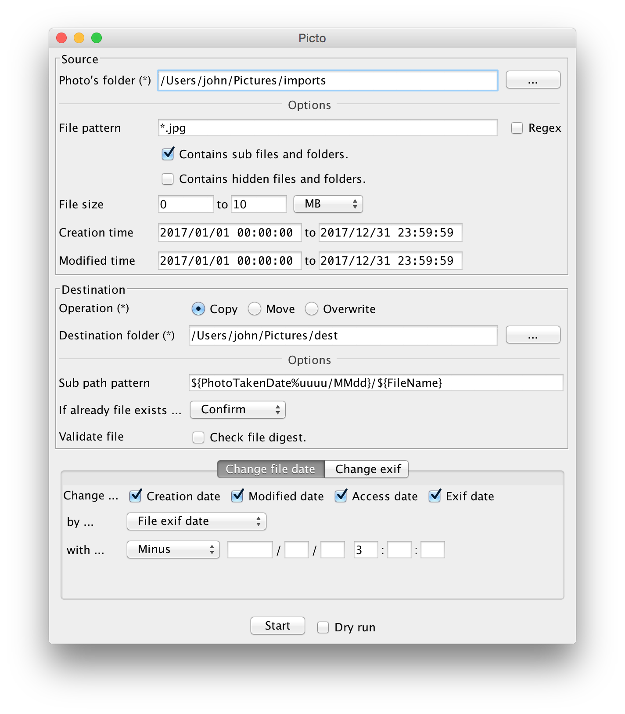

Picto
Picto is a desktop application for organizing photo files.

- Copy or move photos to another folder
You can specify sub folders and file names freely at shooting date etc.
- Change file date
Specified date and difference date can be set. It is effective when you forget to change the time zone of the camera.
- File creation date
- File modified date
- File access date
- Exif date
- Remove Exif data
- GPS data
- All Exif data